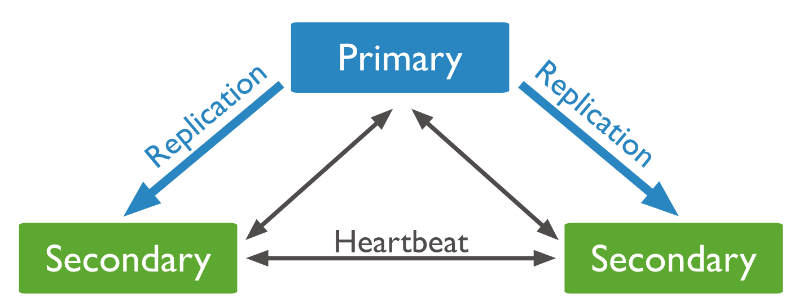
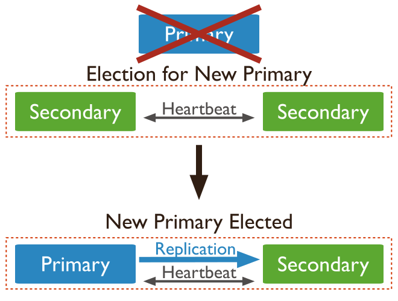

Replica
Replica Set, temelde aynı veri kümesini koruyan birden çok sunucu üzerinde çalışan birden çok mongod işlemidir. Replica Set en az üç düğüme sahip olabilir. Bir replika setindeki bu çoklu düğümler farklı roller oynar ve hepsi birlikte tek bir replika seti oluşturur.
Roles
- Primary
- Secondary
- Arbiter
Primary node
Replika setin ana sunucusudur ve tüm okuma ve yazma işlemleri bunun üzerinde yapılacaktır.
Secondary node
Secondary düğüm, Primary düğümle eşitlenir ve böylece Primaryl düğümün aynı veri kümesinin kopyasını tutar. Bir çoğaltma kümesinde birden çok Secondary düğüm olabilir. Primary düğümün kullanılamaması durumunda, mevcut Secondary düğümler arasında bir seçim başlatacak ve bu düğümlerden biri, bu replika setinin bir sonraki Primary düğümü olacak ve normal işlemlere devam edecek, böylece veritabanı istemcilerine yüksek veri kullanılabilirliği sağlayacaktır.
Arbiter
En önemlisi, bu verilerin herhangi bir kopyasını tutmayacak, yalnızca hangi düğümün bir sonraki Primary olacağına karar vermek için seçimlerde oy kullanacaktır. Birden fazla Secondary düğümün bir sonraki Primary düğüm olmak için yarıştığı altyapılarda yaygın olarak kullanılan bu seçim süresinin, azaltılmasına yardımcı olacaktır.
Replica Mimarisi
Primary with Two Secondary Members (P-S-S)
Verileri depolayan üç üyeli bir replica kümesi şunları içerir:
- Bir primary.
- İki secondary üye. Her iki secondary de bir seçimde primary olabilir.

Bu replica set , ek hata toleransı ve yüksek kullanılabilirlik sağlar. Primary kullanılamıyorsa, replica set Secondary olanı Primary olarak seçer ve normal çalışmaya devam eder. Eski primary, uygun olduğunda kümeye yeniden katılır.

Primary with a Secondary and an Arbiter (PSA)
Verileri depolayan iki üyeli üç üyeli bir çoğaltma kümesi şunları içerir:
* Bir Primary. Bir Secondary üye. Secondary, seçim ile primary olabilir. Bir arbiter. Arbiter sadece seçimlerde oy kullanır.